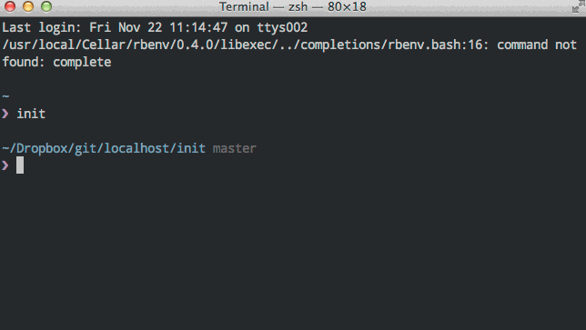
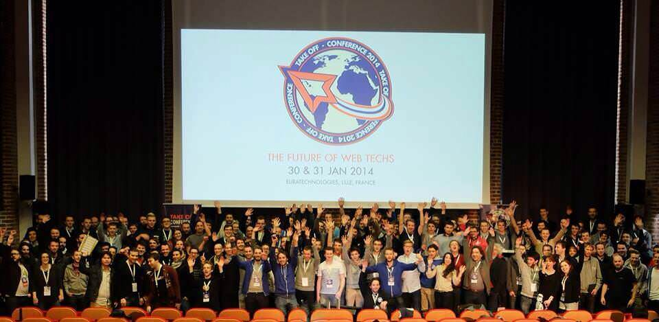

Designer & développeur
Apprendre quelque chose de nouveau chaque jour
Mon histoire

J’ai découvert internet en 1998 à l’époque du 56k, de Caramail et de Lycos. Je n’ai rien râté depuis, grâce à un système de veille efficace, ma persévérance et ma passion.
Je vis à Lille, dans le nord de la France. Mon travail ? Coder des features pour rendre le monde meilleur à travers un web plus libre, plus rapide et à l’épreuve du temps.
Jour après jour
- Découverte de nouveaux produits.
- Recherches sur l’expérience utilisateur.
- Croquis et brainstroming.
- Prototypage d’interfaces.
- Tests d’utilisabilité.
- Codage HTML / CSS (Généralement avec un préprocesseur comme Sass) correctement architecturé et évolutif.
- Tout cela en étroite collaboration avec les ingénieurs et les graphistes.
Architecte front-end

Je suis programmeur ayant une vaste expérience en codage, designer par passion, curieux intellectuellement, et dans la vie je donne le meilleur de moi même pour une chose :
Résoudre de réels problèmes pour les utilisateurs finaux
Je développe en conservant la performance à l’esprit – parce que sur internet, comme dans la vraie vie, le temps c’est de l’argent.
Mes compagnons
HTML5
Les standards du Web sont importants, et j'y adhère. Plus précisément, je valide que mon marquage respecte HTML5.
CSS3
Si vous rencontrez un problème de mise en page dans votre navigateur, vous utillisez probablement un navigateur de merde qui ne supporte pas les standards du web.
JavaScript
Pour donner des interactions à vos pages il est de nos jours indispensable d'utiliser du JavaScript. Je suis également fondateur et participant du groupe chtiJS.
Terminal
Je déploie mes applications web grâce à git.
Je travaille exclusivement avec un terminal et d’autres outils du XXIème siècle pour coder de façon sérieuse et évolutive.
Compétences
- HTML
- Sass
- CoffeeScript
- Git
- Ruby
Voir la progression en temps réél ou le classement GitHub awards
Obtenir mon curriculum vitæ
Envie d’en savoir plus sur mon parcours et mes compétences ?
Télécharger mon CV
Ma philosophie ? évolution et partage
Une conception durable
La scalability au sens large est devenu depuis quelques temps un impératif dans le monde du multi-écran.
Convaincu depuis des années de l’importance du respect des standards, des contraintes d'accessibilité, du mouvement open source, je propose de vous aider dans le choix de technologies durables.
Des solutions souvent simples, tournées vers l'avenir, qui ne font que renforcer la cohérence de ma démarche.
Dialogue
L’échange, l’écoute et le partage dans l'industrie du développement web me parait un point essentiel. Un dialogue clair, sans artifices, est sans doute le meilleur moyen de travailler ensemble.
Takeoff conf 2014
Vous l’avez compris, ma plus grande satisfaction est celle des utilisateurs. La course à la notoriété n’est rien à côté des rencontres enrichissantes que je provoque en participant aux nombreux évènements organisés par la communauté.
Récompenses
Vainqueur des open du web #3 : catégorie intégration
Être mentionné sur un site de référence comme sitepoint.com
Recevoir la bénédiction de @kaelig, auteur de css-maintenables.fr
Certifié digital active par Google
Interviews
rue89
Témoignage : Ce que j’ai fait pendant les vacances ? Du code, évidemment
workspiration
Interview de David Leuliette, développeur front-end & design hacker
dotnetdojo
Quelles sont les technologies à suivre en 2015 ? (interview de David Leuliette)
bloomr
Bloomr accompagne les jeunes dans la construction de leur formation en étude supérieure
Où peut-on me trouver sur internet ?
Toujours pas convaincu ?
Découvez comment je respecte les standards du web en créant des produits évolutifs
Méthode de travail